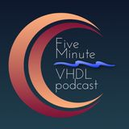

- 
Q&A#10 RAM Parallelism
03:39
ep#22-Multiplier optimization
05:22
Ep#21-Serial-to-Parallel Parallel-to-Serial converter
07:24
Q&A#09-I need a clock!
09:00
Q&A#08- What is the dithering
04:29
ep#20-VHDL Generic
05:34
Ep#19-Iterative statement
04:43
Ep#18-the conditional assignment in VHDL
07:28
ep#17-wait
05:22
Q&A#07- What is the first thing that a recruiter does?
04:04
Ep#16-VHDL process
07:17
Q&A#06- How can I generate a new clock from a reference clock?
10:37
Ep#15-VHDL Packages
03:51
Ep#14-VHDL object
06:11
Q&A#05- Does the USB transfer work as UART?
09:14
QA#04-What is the VHDL design flow
07:09
Ep#13-a way to remember-the flip-flop
05:41
QA#3-plzz send the test bench
03:40
Ep#12-VHDL Simulation
05:50
Ep#11-what is a signal
03:52
Ep#10-More on driver the resolution function
08:12
Ep#09-What is a driver in VHDL
03:57
QA#2-SPI-controller-simulation with Vivado
02:03
QA#1-Do we need clock and address
03:54
Ep#08-concurrency
06:35